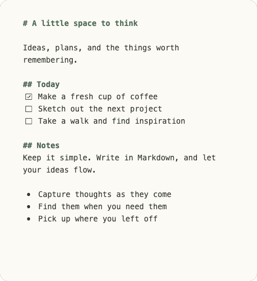

01. CAPTURE
Catch it while it’s here.
A shortcut. A fresh scratchpad. A place for the idea before the next thing takes over.
⌘ / Ctrl+NThought → note.
A notebook for your SilverBullet space
For the passing thought. The next big idea.
The thing you’ll be
glad you wrote down.
A small, native desktop notebook. Write in Markdown,
keep going offline, and sync with SilverBullet.
For macOS, Windows & Linux · In development

01 / Thoughtfully small
Some thoughts don’t need a whole workspace.
Just somewhere to
land.
A shortcut. A fresh scratchpad. A place for the idea before the next thing takes over.
Your edits save locally. Keep writing on the train, in the cabin, or wherever your mind wanders.
Connect to SilverBullet and your scratchpads sync to
Quick Notes/. Ready when you are.
02 / A notebook that feels like you
A little particular about your stationery?
We get it. Find
your shade of quiet.
Same thoughts. A different feeling.
PAPER + DOTTED / A LIVE WEBSITE PREVIEW
Psst. You can write in here. Just for this visit.
03 / A place in the bigger picture
All the ease of a desktop scratchpad. All the possibility of your SilverBullet space.
Start with a local note. When you connect your own SilverBullet server, Bulletnotes brings your scratchpads into your knowledge base. Search your pages. Pick up a thought. Keep the thread.
Discover SilverBulletA small app, taking shape
Bulletnotes is in active development.
Come follow along, or
build your own little space.
No published builds yet. Development builds, when available, are not production releases.